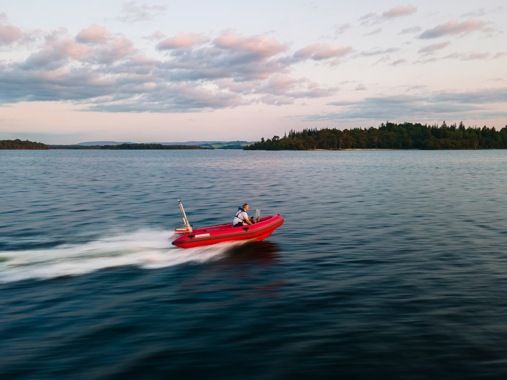

Water-based activities all take place on Lochquarry itself.
Kayaking

Have a go at paddling, rolling and rafting in one of our brand new kayaks.
Max group size 8.
Ages 8+
Ages 8+
Canoeing

Work single-handedly or in pairs to canoe the length of Lochquarry. You can even take a picnic with you and explore some of the Loch’s islands.
Max group size 8 boats (up to 16 people)
Ages 6+
Ages 6+
Powerboating

Take control of one of the Centre’s two RIBs out on Lochquarry and try your hand powerboating.
Max group size 6.
Ages 12+
Ages 12+